BMSY DG / DGH semi-automatic dual-miter band saws
BMSY 230DG · BMSY 230DGH · BMSY 270DG · BMSY 270DGH · BMSY 320DGH · BMSY 360DGH · BMSY 360DGH ECO · BMSY 440DGH
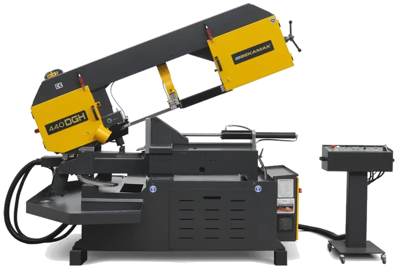
1 / 38-
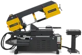
-
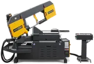
-
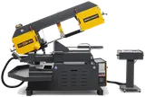
-
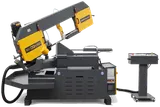
-
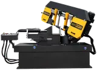
-
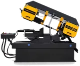
-
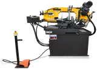
-
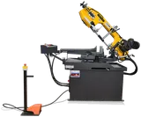
-
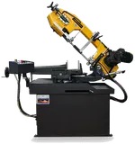
-
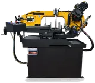
-
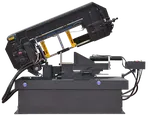
-
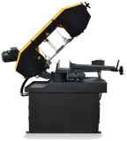
-
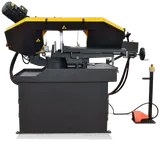
-
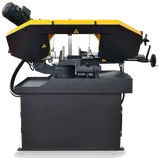
-

-
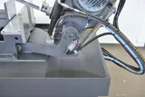
-
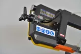
-
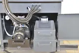
-
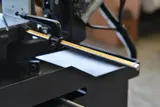
-
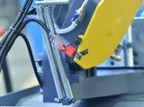
-
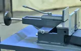
-
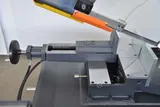
-
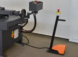
-
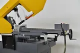
-
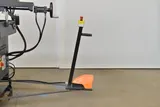
-
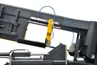
-

-
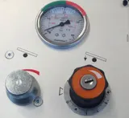
-
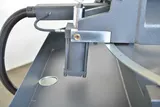
-
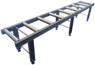
-
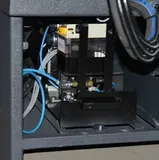
-
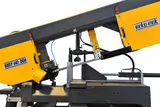
-


The most popular Bekamak pivot saws: automatic bow lift after every cut, with the head swivelling both ways for miters — right to 60°, left to 45°. DGH versions have a hydraulic vise; the DG versions clamp by hand. Sizes from Ø9″ (230 mm) to Ø17-3/8″ (440 mm).
- Semi-automatic cycle: the bow descends at the set feed and returns after the cut; hydraulic vise on the DGH models (manual vise on the 230DG / 270DG)
- Double miter: +60° right and −45° left, head swung by hand on the angle scale
- Inverter drive for stepless blade speed 15–120 m/min (standard from the 270 up; optional on the 230DG / 230DGH)
- Hydro-mechanical blade tension with safety switch; blade brush; coolant pump
- Bow height-adjustment switch; cutting-pressure control on the 440DGH
- Heavy-duty gearbox from the 270 up; control panel
- Options: 10 ft (3 m) roller table, micro-spray lubrication; hydraulic top clamp, laser line pointer and motorized roller table on the 440DGH
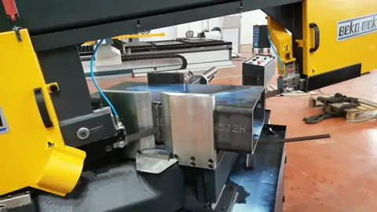
Bekamak BMSY 440DGH double-miter band saw
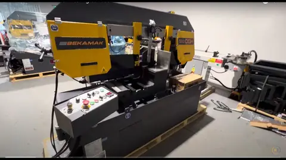
Bekamak BMSY 320DGH double-miter band saw, 12.6″ × 17″
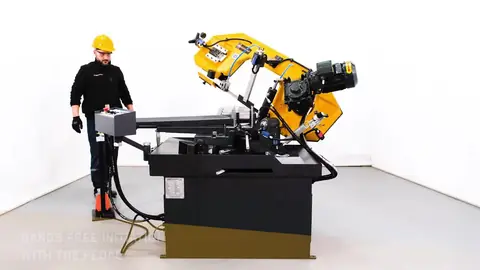
Bekamak BMSY 270DGH semi-automatic double-miter band saw with hydraulic uplift
| Model | BMSY 230DG | BMSY 230DGH | BMSY 270DG | BMSY 270DGH | BMSY 320DGH | BMSY 360DGH | BMSY 360DGH ECO | BMSY 440DGH |
|---|---|---|---|---|---|---|---|---|
| Capacity 0° (straight) — round | Ø9″ (230 mm) | Ø9″ (230 mm) | Ø10-5/8″ (270 mm) | Ø10-5/8″ (270 mm) | Ø12-5/8″ (320 mm) | Ø14-1/8″ (360 mm) | Ø14-1/8″ (360 mm) | Ø17-3/8″ (440 mm) |
| Capacity 0° (straight) — rectangular W × H | 12-1/4″ × 5-1/8″ (310 × 130 mm) | 12-1/4″ × 5-1/8″ (310 × 130 mm) | 13-3/4″ × 8-5/8″ (350 × 220 mm) | 13-3/4″ × 8-5/8″ (350 × 220 mm) | 17-3/4″ × 12-5/8″ (450 × 320 mm) | 24″ × 14-1/8″ (610 × 360 mm) | 20-1/8″ × 14-1/8″ (510 × 360 mm) | 24″ × 17-3/8″ (610 × 440 mm) |
| Capacity 0° (straight) — square | 9″ (230 mm) | 9″ (230 mm) | 10-5/8″ (270 mm) | 10-5/8″ (270 mm) | 12-5/8″ (320 mm) | 14-1/8″ (360 mm) | 14-1/8″ (360 mm) | 17-3/8″ (440 mm) |
| Capacity +30° right — round | Ø9″ (230 mm) | Ø9″ (230 mm) | Ø10-5/8″ (270 mm) | Ø10-5/8″ (270 mm) | Ø12-5/8″ (320 mm) | Ø14-1/8″ (360 mm) | Ø14-1/8″ (360 mm) | Ø17-3/8″ (440 mm) |
| Capacity +30° right — rectangular W × H | 10-1/4″ × 4-3/4″ (260 × 120 mm) | 10-1/4″ × 4-3/4″ (260 × 120 mm) | 11-3/4″ × 5-1/2″ (300 × 140 mm) | 11-3/4″ × 5-1/2″ (300 × 140 mm) | 15″ × 12-5/8″ (380 × 320 mm) | 21-5/8″ × 14-1/8″ (550 × 360 mm) | 17-3/8″ × 14-1/8″ (440 × 360 mm) | 19-5/8″ × 17-3/8″ (500 × 440 mm) |
| Capacity +30° right — square | 9″ (230 mm) | 9″ (230 mm) | 9-7/8″ (250 mm) | 9-7/8″ (250 mm) | 12-5/8″ (320 mm) | 14-1/8″ (360 mm) | 14-1/8″ (360 mm) | 17-3/8″ (440 mm) |
| Capacity +45° right — round | Ø8-1/4″ (210 mm) | Ø8-1/4″ (210 mm) | Ø9″ (230 mm) | Ø9″ (230 mm) | Ø12-5/8″ (320 mm) | Ø14-1/8″ (360 mm) | Ø14-1/8″ (360 mm) | Ø16-1/8″ (410 mm) |
| Capacity +45° right — rectangular W × H | 8-1/4″ × 3-7/8″ (210 × 100 mm) | 8-1/4″ × 3-7/8″ (210 × 100 mm) | 9″ × 5-7/8″ (230 × 150 mm) | 9″ × 5-7/8″ (230 × 150 mm) | 13″ × 12-5/8″ (330 × 320 mm) | 17-3/8″ × 14-1/8″ (440 × 360 mm) | 15-3/8″ × 14-1/8″ (390 × 360 mm) | 16-1/8″ × 17-3/8″ (410 × 440 mm) |
| Capacity +45° right — square | 7-1/2″ (190 mm) | 7-1/2″ (190 mm) | 6-3/4″ (170 mm) | 6-3/4″ (170 mm) | 12-5/8″ (320 mm) | 14-1/8″ (360 mm) | 14-1/8″ (360 mm) | 16-1/8″ (410 mm) |
| Capacity +60° right — round | Ø5-1/8″ (130 mm) | Ø5-1/8″ (130 mm) | Ø5-7/8″ (150 mm) | Ø5-7/8″ (150 mm) | — | Ø12-5/8″ (320 mm) | Ø9-7/8″ (250 mm) | Ø12-5/8″ (320 mm) |
| Capacity +60° right — rectangular W × H | 5-1/8″ × 3-7/8″ (130 × 100 mm) | 5-1/8″ × 3-7/8″ (130 × 100 mm) | 5-7/8″ × 3-7/8″ (150 × 100 mm) | 5-7/8″ × 3-7/8″ (150 × 100 mm) | — | 10-5/8″ × 14-1/8″ (270 × 360 mm) | 8-5/8″ × 14-1/8″ (220 × 360 mm) | 9-7/8″ × 17-3/8″ (250 × 440 mm) |
| Capacity +60° right — square | 3-7/8″ (100 mm) | 3-7/8″ (100 mm) | 3-7/8″ (100 mm) | 3-7/8″ (100 mm) | — | 11″ (280 mm) | 8-5/8″ (220 mm) | 9-7/8″ (250 mm) |
| Capacity -30° left — round | Ø9″ (230 mm) | Ø9″ (230 mm) | Ø10-1/4″ (260 mm) | Ø10-1/4″ (260 mm) | Ø12-5/8″ (320 mm) | Ø14-1/8″ (360 mm) | Ø14-1/8″ (360 mm) | Ø17-3/8″ (440 mm) |
| Capacity -30° left — rectangular W × H | 10-1/4″ × 4-3/8″ (260 × 110 mm) | 10-1/4″ × 4-3/8″ (260 × 110 mm) | 11-3/8″ × 3-7/8″ (290 × 100 mm) | 11-3/8″ × 3-7/8″ (290 × 100 mm) | 15″ × 12-5/8″ (380 × 320 mm) | 21-5/8″ × 14-1/8″ (550 × 360 mm) | 17-3/8″ × 14-1/8″ (440 × 360 mm) | 19-5/8″ × 17-3/8″ (500 × 440 mm) |
| Capacity -30° left — square | 7-7/8″ (200 mm) | 7-7/8″ (200 mm) | 8-5/8″ (220 mm) | 8-5/8″ (220 mm) | 12-5/8″ (320 mm) | 14-1/8″ (360 mm) | 14-1/8″ (360 mm) | 17-3/8″ (440 mm) |
| Capacity -45° left — round | Ø7-1/8″ (180 mm) | Ø7-1/8″ (180 mm) | Ø7-1/2″ (190 mm) | Ø7-1/2″ (190 mm) | Ø12-5/8″ (320 mm) | Ø14-1/8″ (360 mm) | Ø14-1/8″ (360 mm) | Ø16-1/8″ (410 mm) |
| Capacity -45° left — rectangular W × H | 7-7/8″ × 3-1/8″ (200 × 80 mm) | 7-7/8″ × 3-1/8″ (200 × 80 mm) | 7-7/8″ × 3-7/8″ (200 × 100 mm) | 7-7/8″ × 3-7/8″ (200 × 100 mm) | 13-3/8″ × 12-5/8″ (340 × 320 mm) | 17-3/8″ × 14-1/8″ (440 × 360 mm) | 15-3/8″ × 14-1/8″ (390 × 360 mm) | 16-1/8″ × 17-3/8″ (410 × 440 mm) |
| Capacity -45° left — square | 5-7/8″ (150 mm) | 5-7/8″ (150 mm) | 6-1/4″ (160 mm) | 6-1/4″ (160 mm) | 11-3/4″ (300 mm) | 14-1/8″ (360 mm) | 14-1/8″ (360 mm) | 16-1/8″ (410 mm) |
| Capacity -60° left — round | — | — | — | — | Ø9″ (230 mm) | Ø13″ (330 mm) | Ø11″ (280 mm) | Ø12-5/8″ (320 mm) |
| Capacity -60° left — rectangular W × H | — | — | — | — | 9″ × 8-5/8″ (230 × 220 mm) | 11-3/4″ × 14-1/8″ (300 × 360 mm) | 10-1/4″ × 14-1/8″ (260 × 360 mm) | 11-1/4″ × 17-3/8″ (285 × 440 mm) |
| Capacity -60° left — square | — | — | — | — | 8-5/8″ (220 mm) | 11-3/4″ (300 mm) | 10-1/4″ (260 mm) | 11-1/4″ (285 mm) |
| Blade speed | 115–230 ft/min (35–70 m/min) | 115–230 ft/min (35–70 m/min) | 49–394 ft/min (15–120 m/min) | 49–394 ft/min (15–120 m/min) | 49–394 ft/min (15–120 m/min) | 49–394 ft/min (15–120 m/min) | 49–394 ft/min (15–120 m/min) | 49–394 ft/min (15–120 m/min) |
| Band blade L × W × T | 107-1/2 × 1 × .035 in (2730 × 27 × 0.9 mm) | 107-1/2 × 1 × .035 in (2730 × 27 × 0.9 mm) | 124-1/2 × 1 × .035 in (3160 × 27 × 0.9 mm) | 124-1/2 × 1 × .035 in (3160 × 27 × 0.9 mm) | 164 × 1-1/4 × .042 in (4160 × 34 × 1.1 mm) | 197 × 1-1/4 × .042 in (5000 × 34 × 1.1 mm) | 189 × 1-1/4 × .042 in (4800 × 34 × 1.1 mm) | 204-1/2 × 1-1/4 × .042 in (5200 × 34 × 1.1 mm) |
| Main motor | 1.3–1.7 HP (1–1.3 kW) | 1.3–1.7 HP (1–1.3 kW) | 2 HP (1.5 kW) | 2 HP (1.5 kW) | 3 HP (2.2 kW) | 4 HP (3 kW) | 4 HP (3 kW) | 4 HP (3 kW) |
| Hydraulic motor | 0.5 HP (0.37 kW) | 0.5 HP (0.37 kW) | 0.5 HP (0.37 kW) | 0.5 HP (0.37 kW) | 0.5 HP (0.37 kW) | 0.7 HP (0.55 kW) | 0.5 HP (0.37 kW) | 0.7 HP (0.55 kW) |
| Coolant pump | 0.2 HP (0.12 kW) | 0.2 HP (0.12 kW) | 0.2 HP (0.12 kW) | 0.2 HP (0.12 kW) | 0.2 HP (0.12 kW) | 0.2 HP (0.12 kW) | 0.2 HP (0.12 kW) | 0.2 HP (0.12 kW) |
| Working height | 30″ (760 mm) | 31-1/2″ (806 mm) | 36″ (910 mm) | 36″ (910 mm) | 34″ (860 mm) | 34″ (860 mm) | 34″ (860 mm) | 34″ (860 mm) |
| Weight | 948 lb (430 kg) | 1,025 lb (465 kg) | 1,049 lb (476 kg) | 1,157 lb (525 kg) | 2,271 lb (1030 kg) | 3,241 lb (1470 kg) | 3,197 lb (1450 kg) | 3,616 lb (1640 kg) |
| Dimensions L × W × H | 53 × 28 × 51 in (1350 × 700 × 1300 mm) | 53 × 28 × 51 in (1350 × 700 × 1300 mm) | 68 × 30 × 57 in (1730 × 770 × 1460 mm) | 68 × 30 × 57 in (1730 × 770 × 1460 mm) | 88 × 45 × 84 in (2230 × 1150 × 2140 mm) | 108 × 48 × 74 in (2750 × 1210 × 1870 mm) | 104 × 48 × 74 in (2650 × 1210 × 1870 mm) | 110 × 48 × 74 in (2800 × 1210 × 1870 mm) |
| Voltage | 600 V 3-phase (208/240/480 V on request) | 600 V 3-phase (208/240/480 V on request) | 600 V 3-phase (208/240/480 V on request) | 600 V 3-phase (208/240/480 V on request) | 600 V 3-phase (208/240/480 V on request) | 600 V 3-phase (208/240/480 V on request) | 600 V 3-phase (208/240/480 V on request) | 600 V 3-phase (208/240/480 V on request) |
Capacities are the largest stock the saw passes at the stated angle, converted from the manufacturer's metric data and rounded to the nearest 1/8″. Blade size is length × width × thickness. Three-phase machines are supplied for 600 V; 208 V, 240 V or 480 V 3-phase available on request.